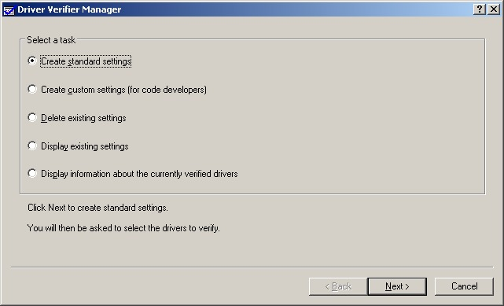
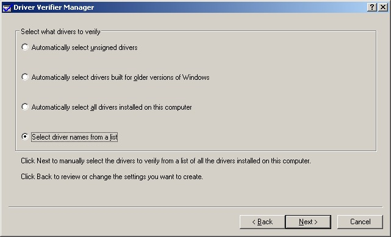

Steward
分享是一種喜悅、更是一種幸福
驅動程式 - Windows Driver Model (WDM) - 如何使用Verifier驗證驅動程式
Windows系統本身有一個內建的驅動程式驗證工具Verifier，該工具不需要額外安裝就可以做驅動程式的IRP、記憶體等項目驗證，使用者電腦如果沒有安裝WHQL驗證工具，則可以使用此工具先做簡單驗證，當然，建議要Release驅動程式前，還是必須做一次WHQL驗證，確保Release的驅動程式不會有問題，而要執行該工具只需叫出Command Line，然後輸入：verifier

使用者可以使用Standard或者Custom兩種配置方式進行驅動程式驗證，建議使用Custom並且選擇全部測試項目進行驗證，而在設定的最後階段，該Tool會讓使用者選擇需要驗證的驅動程式

若使用者需要驗證的驅動程式是屬於Legacy(Nt-Style)驅動程式，請選擇Select driver names from a list項目並且選擇需要驗證的驅動程式，設定後，每次重新開機，系統就會做測試項目驗證，所以記得測試完之後，要刪除既有的測試項目，才不會每次開機後都在做測試，另外，如果驅動程式有問題，每次重新開機都發生BSOD時，只要進入安全模式移除測試項目即可